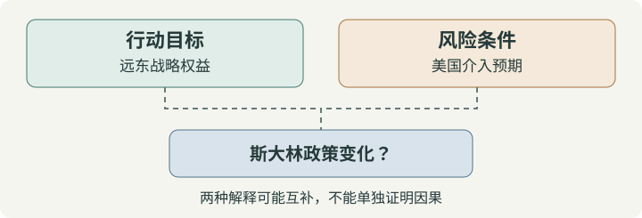
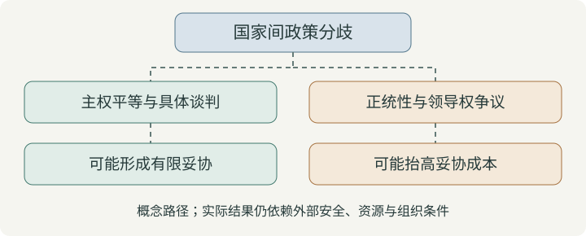

01 · 为什么共同信仰未能保证同盟稳定？
1950年中苏缔结同盟，而后来两国走向严重对立。若共同意识形态足以维系联盟，这种变化如何解释？沈志华的研究把问题转向国家利益、党际权威与决策条件。本文考察1945—1976年的主要历史案例，并延伸到2009、2017、2020及2023年的公开观点；不试图推断学者未公开的私人政治立场。
据华东师范大学教师简介[S1]，他长期研究苏联史、冷战国际史和中苏、中朝关系，主编34卷《苏联历史档案选编》及12卷《俄罗斯解密档案选编：中苏关系》。档案的开放扩大了可检验范围，但档案记录与历史解释不等价。
02 · 先建立时间坐标
1945—1946：苏联在国共之间调整政策，维护远东权益；1949—1950：中苏条约重新谈判，斯大林转变对金日成武力统一计划的态度；1950年：中国介入朝鲜战争；1956—1957：苏共二十大、波匈事件、中国整风与反右；1950年代末至1960年代：中苏分歧加剧；1970年代：中美关系调整，中朝联盟环境改变。各事件的先后关系不直接证明因果。
著作线索：1994年《新经济政策与苏联农业社会化道路》、2008年《思考与选择》、2013年《无奈的选择》与《处在十字路口的选择》、2017年《最后的“天朝”》、2023年经济冷战论文。版本及页码须按实际使用的版本核对。[S1][S11]
03 · 斯大林为何改变政策：目标与条件
沈志华2012年论文[S2]的核心解释，是苏联在中国东北原有权益受到中苏新条约调整的影响，因而希望通过朝鲜半岛重新获得战略支点。这并非“毛泽东要求归还权益必然导致朝鲜战争”的单线决定论。1950年1月30—31日电报的公开译本[S3]有助于确认斯大林态度转变，却不能单凭态度变化确定全部动机。
竞争解释：Weathersby在2013年书评[S4]指出沈对美国NSC-48政策讨论不足，强调莫斯科对于美国是否干预的判断。沈本人也在2012年论文中明确区分政策目标与实施条件。两者可能互补：一项战略收益解释为什么想做，风险预期解释为什么当时愿意做。也不能由美国政策文本直接证明斯大林何时获悉其内容。
检验办法：按日期排列中苏条约谈判、苏联内部电报、金日成请求和美方政策；追查港口权益是否在批准战争的内部讨论中被明确提出。如果发现决策文件明确排除港口考量，或显示其他独立目标主导，则须下调该解释的可信度。

04 · 中国出兵：安全、同盟与国家建设
清华大学2020年10月9日讲座纪要[S5]记录沈志华将抗美援朝称为“立国之战”。他把新政权面临的安全、经济建设、国际同盟互信问题纳入决策分析。可将其解释拆为国家安全、革命理念、国际主义义务和政权与同盟安全四类；这是整理框架，非逐字演讲。
反事实边界：战争后苏联援助和中苏合作扩大，并不自动证明出兵是取得全部援助的必要条件。1950年同盟本已建立，工业援助还受苏联政策、经济能力和中国谈判等多因素影响。需比较战前协议、后续援助项目及内部讨论，区分预期目标、实际结果和机会成本。战争的人道与经济成本也不能由援助收益抵销或省略。
05 · 中苏决裂：党际关系与国家关系的结构失衡
2017年4月10日报告的官方提要[S6]直接给出结构失衡论：当社会主义阵营内部领导结构发生变化，争夺国际共运的话语权与领导权成为路线和政策冲突的处理方式；党际关系又可能覆盖主权国家之间的平等关系。沈将这一结构缺陷视为同盟破裂的根本原因。
机制上，若两国可平等谈判、接受政策差异，利益冲突可以局部解决；若分歧被上升为谁掌握正统性的争执，妥协就可能同时意味着损失政治权威。结构失衡解释的是为何争端可能升级，并非证明所有争端一定升级。军事安全、核政策、经济援助、领导层国内政治等仍是竞争或互补变量。
可证伪预测（本文提出）：在同等利益冲突下，党际权威争议越强、主权平等的争议解决渠道越弱，妥协成本可能越高。应比较苏南、中苏、中朝各自不同阶段；若存在结构相似却长期稳定的同盟，须解释调节条件，而不能只选破裂案例。

06 · 中朝关系：小国并非大国的被动附属
2013年上海交大讲坛记录[S7]及《最后的“天朝”》书目[S1]提供研究入口。沈的中朝关系研究关注政治自主、援助、安全与历史记忆之间的张力。1956年朝鲜内部政治冲突及中苏干预是值得进一步核对的案例；本轮未取得对应朝鲜内部档案，不将派系清洗的完整过程或金日成内心动机作确定陈述。
解释模型：如果较小国家有替代援助来源，其对单一盟友的依赖可能下降；若大国之间争夺影响力，小国可能获得更大的谈判空间。但援助依赖、经济约束、地缘安全与国内政治也会限制其选择。历史友谊不是虚构的，也不等于利益永远一致。
07 · 1956—1957：中国政策转向与苏联改革
《思考与选择》和《处在十字路口的选择》确实是沈的代表著作[S1]。核心研究问题是知识分子政策、整风和反右之间的变化如何受国内政治与国际危机影响。有关他是否断言整风初期完全没有诱捕意图，本轮未读到足够的专著原页；访谈链接[S8]正文重访超时，故只保留动态决策与预谋解释的竞争问题，不将前者定为已经核实的作者原话。
2009年《中国改革》访谈[S10]中，他将新经济政策、赫鲁晓夫改革及戈尔巴乔夫改革视为三次未成功的改革尝试。这是他的历史分期和评价，非公认的唯一分期。三者目标、政治条件与失败标准各异，不能简单解释为同一种制度必然性。
08 · 中国内战：苏联支持为何随条件变化？
沈关于1945—1946年内战的论文转载[S9]论述了苏联对中国东北权益的考虑及其对国共两方政策的变化。此处的核心是意识形态认同与国家战略利益并不等同。对苏联的具体指令、国共各自执行方式以及后来战争结果的关系，仍须用中俄双方档案核对。不能从这一早期阶段推断斯大林在整个中国内战期间始终反对中共夺取全国政权。
09 · 经济脱钩：冷战的另一条解释链
2023年沈志华在华东师大学报发表《观察“冷战发生”的新视角》[S11]，提出由苏联经济观念、政策及美苏经济关系解释冷战形成的研究框架。文章摘要强调冷战是经过多个可能回转的阶段形成的，而非预先注定。经济合作破裂可能削弱协调激励，但也可能是安全竞争的结果。
识别方向：研究战后贷款、贸易、国际经济制度谈判与安全政策的时间顺序；检查经济政策是否先于安全冲突变化，并寻找反向因果和共同原因。不能将美苏经验直接外推为当代任何经济摩擦必然导致冷战。
10 · 公开言论：2017年的半岛政策判断
2017年3月大连外国语大学讲演的节选[S12]及随后研讨发言的转载[S13]表明，沈认为中国的发展需要稳定周边环境，并曾将朝鲜称作中国潜在敌人、韩国称作可能朋友。他在后续发言中回顾了这一判断。这里所讨论的是2017年的个人政策意见，不是经档案证实的事实，更不是对当前形势的预测。两篇转载并非两份独立的原讲演录音。
政策反证：当时的评论文章[S14]对韩国的美韩安全同盟以及其外交自主程度提出质疑。这一反对意见提醒读者检验军事同盟、边境安全、朝核风险、经济利益和统一后的安全安排，而非根据共同经济利益推导唯一外交政策。本文不认定任何一方的政策主张已被证明。
11 · 如何读懂证据，而不是只记住结论
FACT：作者公开发表了相关论文、讲座与访谈；史料译本可定位。INFERENCE：战略权益、风险预期、党际权威、资源依赖与经济合作可以构成互补机制。HYPOTHESIS：某一变量是某次决策的首要或必要原因。UNKNOWN：未公开内部讨论、完整原档及未发生的反事实结果。
阅读顺序可从《毛泽东、斯大林与朝鲜战争》开始，继以《无奈的选择》《最后的“天朝”》《处在十字路口的选择》，最后阅读2023年经济冷战论文及独立书评。每个案例都应先问时间、行动与来源，再问目标、可选方案和竞争解释；不要从结局倒推当事人的意图。
12 · 论断—证据台账
| 论断 | 核验状态 | 限制 |
|---|---|---|
| 沈志华的学术领域及档案集编纂记录 [S1] | SUPPORTED | 大学教师简介；不是对全部档案内容的核验 |
| 1950年1月苏联电报显示斯大林对朝鲜计划的态度变化 [S3] | PARTIALLY_SUPPORTED | 译本为直接文献线索，本轮未核原俄文全卷 |
| 苏联远东权益是斯大林决策的关键目标，是沈的论点 [S2] | SUPPORTED | 支持作者归属；不证明动机唯一 |
| 远东权益足以单独解释战争爆发 [S4] | DISPUTED | 美国干预预期与风险判断属于竞争解释；不能仅凭书评证明全部动机 |
| 沈在2020年清华讲座提出立国之战观点 [S5] | SUPPORTED | 机构纪要，非完整逐字稿 |
| 出兵是全部苏援的必要条件 [S5] | UNVERIFIED | 反事实不能由战后合作直接推出 |
| 沈提出中苏同盟结构失衡论 [S6] | SUPPORTED | 官方报告内容提要；理论归属可定位，普遍因果尚待检验 |
| 中朝关系历史并非静态单一友谊 [S7] | PARTIALLY_SUPPORTED | 讲座报道、书目；未逐页核原书 |
| 整风初期不存在预谋诱捕 [S8] | UNVERIFIED | 访谈页面正文重访超时，未核对应专著原页 |
| 沈认为苏联有三次未成功的改革 [S10] | SUPPORTED | 访谈中的解释性分期 |
| 沈将苏联对国共政策变化放在远东战略利益中解释 [S9] | SUPPORTED | 作者论文转载摘要；未逐件复核档案 |
| 2023年沈提出经济视角解释冷战形成 [S11] | SUPPORTED | 期刊摘要与DOI；不等于经济因素唯一 |
| 沈曾在2017年提出朝鲜潜在敌人、韩国可能朋友的判断 [S13] | PARTIALLY_SUPPORTED | 本人后续发言转载与当年节选；未取得原始录音 |
| 韩国主导的统一一定符合中国利益 [S14] | UNVERIFIED | 政策意见与反对意见并存；缺少完整反事实安全安排 |
13 · 原始资料与独立评论
- 沈志华：教师简介 — 华东师范大学历史学系，日期待核。生平、研究领域、专著及档案集目录。
- 保障苏联在远东的战略利益——试论朝鲜战争起因与斯大林的决策动机 — 华东师范大学学报，2012。44卷4期，35–48页；目标与实现条件的区别。
- 1950年1月30—31日苏联密电（英译） — National Security Archive / CWIHP，1950-01。斯大林与什特科夫往来电报；解密译本。
- The Korean War in the Context of Sino-Soviet Relations — Kathryn Weathersby，H-Diplo；USC转载，2013-04。讨论港口解释、NSC-48与美国干预预期。
- 立国之战——抗美援朝战争与中国决策 — 清华大学国际与地区研究院，2020-10-09。讲座纪要，非逐字实录。
- 试论无产阶级国际主义的困境——从中苏同盟破裂看社会主义国家关系的结构失衡 — 华东师范大学人文与社会科学研究院，2017-03-27。2017年4月10日报告预告及内容提要。
- 友谊的代价——中朝关系的历史考察 — 上海交通大学焦点网，2013。第61期焦点讲坛记录。
- 沈志华谈国际视野下的中国1956—1957 — 华东师范大学转载《东方早报》，日期待核。标题可检索，本轮正文再次访问超时。
- 斯大林与中国内战的起源（1945—1946） — 沈志华，爱思想转载，日期待核。摘要及苏联对华战略目标段。
- 发现曾经真实的苏联 — 《中国改革》访谈，新浪转载，2009-12-02。三次改革的访谈段落。
- 观察“冷战发生”的新视角 — 沈志华，华东师范大学学报，2023-01-18。55卷1期53–60页，DOI 10.16382/j.cnki.1000-5579.2023.01.005；摘要。
- 朝鲜、韩国，谁才是中国的朋友？ — 吴晓波频道，新浪转载，2017-04-17。演讲节选；非完整录音。
- 中朝关系演变与朝鲜拥核政策的关联 — 复育智库转载研讨发言，日期待核。发言中回顾2017年3月讲演；非独立的原演讲实录。
- 请问沈志华，军队归美国指挥的韩国如何亲华反美？ — 鹿野，红色文化网，2017-04-03。政策立场评论，反对意见而非独立事实核验。
后续研究优先取得2012年论文所引档案的原俄文版本、1956—1957年相关专著原页、2017年演讲完整录音，并对经济冷战机制寻找独立学术反证。访问日期：2026-11-25；个别页面访问受限已在台账注明。